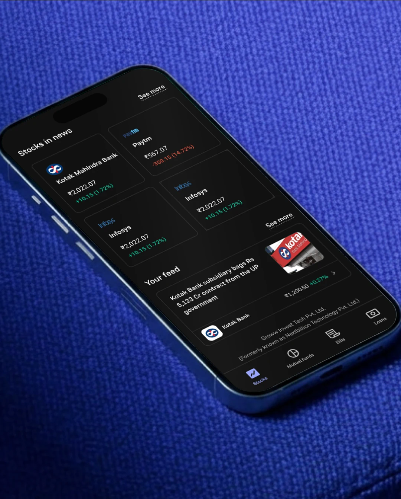
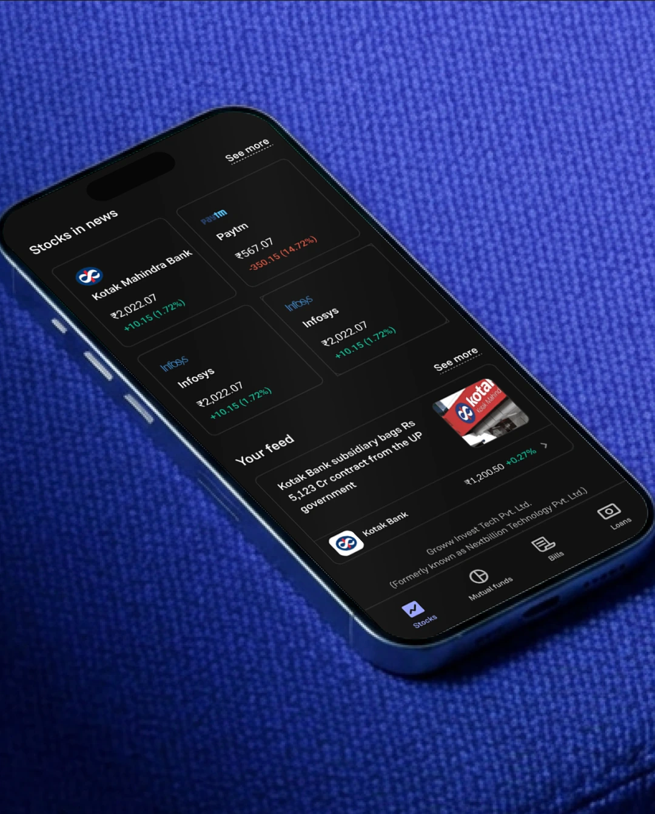
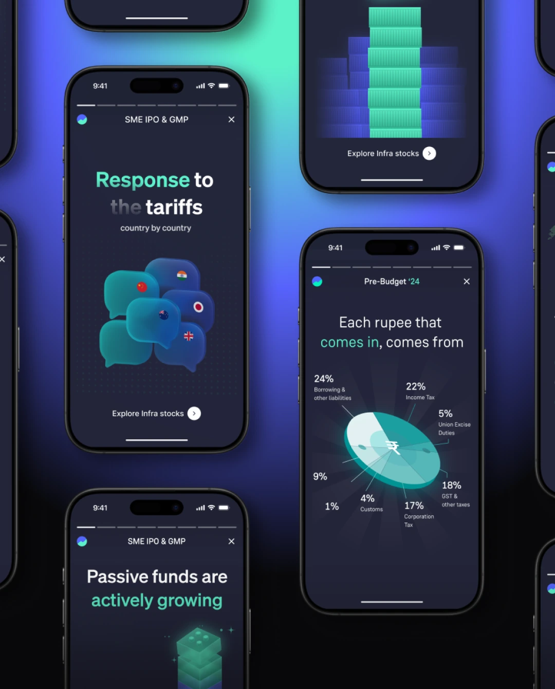
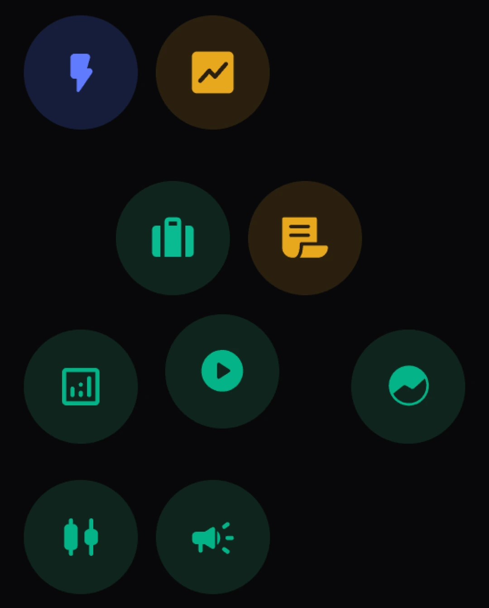

How we helped Groww boost engagement on their app
A deep engagement with Groww to design and improve features that engage users on their consumer app, along with design support for other product initiatives.




View case study